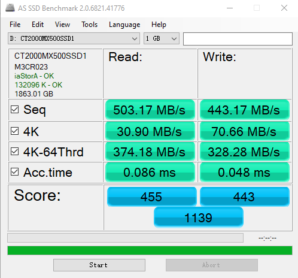
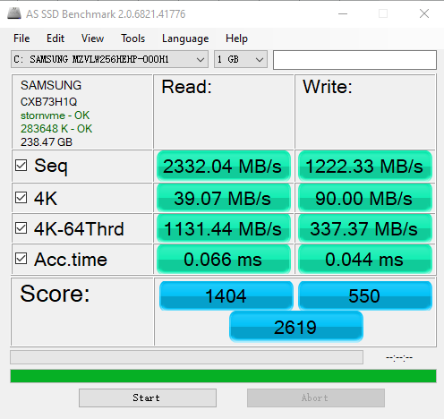

- 00 开篇词 为什么你需要学习计算机组成原理？.md.html
- 01 冯·诺依曼体系结构：计算机组成的金字塔.md.html
- 02 给你一张知识地图，计算机组成原理应该这么学.md.html
- 03 通过你的CPU主频，我们来谈谈“性能”究竟是什么？.md.html
- 04 穿越功耗墙，我们该从哪些方面提升“性能”？.md.html
- 05 计算机指令：让我们试试用纸带编程.md.html
- 06 指令跳转：原来if...else就是goto.md.html
- 07 函数调用：为什么会发生stack overflow？.md.html
- 08 ELF和静态链接：为什么程序无法同时在Linux和Windows下运行？.md.html
- 09 程序装载：“640K内存”真的不够用么？.md.html
- 10 动态链接：程序内部的“共享单车”.md.html
- 11 二进制编码：“手持两把锟斤拷，口中疾呼烫烫烫”？.md.html
- 12 理解电路：从电报机到门电路，我们如何做到“千里传信”？.md.html
- 13 加法器：如何像搭乐高一样搭电路（上）？.md.html
- 14 乘法器：如何像搭乐高一样搭电路（下）？.md.html
- 15 浮点数和定点数（上）：怎么用有限的Bit表示尽可能多的信息？.md.html
- 16 浮点数和定点数（下）：深入理解浮点数到底有什么用？.md.html
- 17 建立数据通路（上）：指令加运算=CPU.md.html
- 18 建立数据通路（中）：指令加运算=CPU.md.html
- 19 建立数据通路（下）：指令加运算=CPU.md.html
- 20 面向流水线的指令设计（上）：一心多用的现代CPU.md.html
- 21 面向流水线的指令设计（下）：奔腾4是怎么失败的？.md.html
- 22 冒险和预测（一）：hazard是“危”也是“机”.md.html
- 23 冒险和预测（二）：流水线里的接力赛.md.html
- 24 冒险和预测（三）：CPU里的“线程池”.md.html
- 25 冒险和预测（四）：今天下雨了，明天还会下雨么？.md.html
- 26 Superscalar和VLIW：如何让CPU的吞吐率超过1？.md.html
- 27 SIMD：如何加速矩阵乘法？.md.html
- 28 异常和中断：程序出错了怎么办？.md.html
- 29 CISC和RISC：为什么手机芯片都是ARM？.md.html
- 30 GPU（上）：为什么玩游戏需要使用GPU？.md.html
- 31 GPU（下）：为什么深度学习需要使用GPU？.md.html
- 32 FPGA、ASIC和TPU（上）：计算机体系结构的黄金时代.md.html
- 33 解读TPU：设计和拆解一块ASIC芯片.md.html
- 34 理解虚拟机：你在云上拿到的计算机是什么样的？.md.html
- 35 存储器层次结构全景：数据存储的大金字塔长什么样？.md.html
- 36 局部性原理：数据库性能跟不上，加个缓存就好了？.md.html
- 37 理解CPU Cache（上）：“4毫秒”究竟值多少钱？.md.html
- 38 高速缓存（下）：你确定你的数据更新了么？.md.html
- 39 MESI协议：如何让多核CPU的高速缓存保持一致？.md.html
- 40 理解内存（上）：虚拟内存和内存保护是什么？.md.html
- 41 理解内存（下）：解析TLB和内存保护.md.html
- 42 总线：计算机内部的高速公路.md.html
- 43 输入输出设备：我们并不是只能用灯泡显示“0”和“1”.md.html
- 44 理解IO_WAIT：IO性能到底是怎么回事儿？.md.html
- 45 机械硬盘：Google早期用过的“黑科技”.md.html
- 46 SSD硬盘（上）：如何完成性能优化的KPI？.md.html
- 47 SSD硬盘（下）：如何完成性能优化的KPI？.md.html
- 48 DMA：为什么Kafka这么快？.md.html
- 49 数据完整性（上）：硬件坏了怎么办？.md.html
- 50 数据完整性（下）：如何还原犯罪现场？.md.html
- 51 分布式计算：如果所有人的大脑都联网会怎样？.md.html
- 52 设计大型DMP系统（上）：MongoDB并不是什么灵丹妙药.md.html
- 53 设计大型DMP系统（下）：SSD拯救了所有的DBA.md.html
- 54 理解Disruptor（上）：带你体会CPU高速缓存的风驰电掣.md.html
- 55 理解Disruptor（下）：不需要换挡和踩刹车的CPU，有多快？.md.html
- 结束语 知也无涯，愿你也享受发现的乐趣.md.html
- 捐赠
44 理解IO_WAIT：IO性能到底是怎么回事儿？
在专栏一开始的时候，我和你说过，在计算机组成原理这门课里面，很多设计的核心思路，都来源于性能。在前面讲解 CPU 的时候，相信你已经有了切身的感受了。
大部分程序员开发的都是应用系统。在开发应用系统的时候，我们遇到的性能瓶颈大部分都在 I/O 上。在第 36 讲讲解局部性原理的时候，我们一起看了通过把内存当作是缓存，来提升系统的整体性能。在第 37 讲讲解 CPU Cache 的时候，我们一起看了 CPU Cache 和主内存之间性能的巨大差异。
然而，我们知道，并不是所有问题都能靠利用内存或者 CPU Cache 做一层缓存来解决。特别是在这个“大数据”的时代。我们在硬盘上存储了越来越多的数据，一个 MySQL 数据库的单表有个几千万条记录，早已经不算是什么罕见现象了。这也就意味着，用内存当缓存，存储空间是不够用的。大部分时间，我们的请求还是要打到硬盘上。那么，这一讲我们就来看看硬盘 I/O 性能的事儿。
IO 性能、顺序访问和随机访问
如果去看硬盘厂商的性能报告，通常你会看到两个指标。一个是响应时间（Response Time），另一个叫作数据传输率（Data Transfer Rate）。没错，这个和我们在专栏的一开始讲的 CPU 的性能一样，前面那个就是响应时间，后面那个就是吞吐率了。
我们先来看一看后面这个指标，数据传输率。
我们现在常用的硬盘有两种。一种是 HDD 硬盘，也就是我们常说的机械硬盘。另一种是 SSD 硬盘，一般也被叫作固态硬盘。现在的 HDD 硬盘，用的是 SATA 3.0 的接口。而 SSD 硬盘呢，通常会用两种接口，一部分用的也是 SATA 3.0 的接口；另一部分呢，用的是 PCI Express 的接口。
现在我们常用的 SATA 3.0 的接口，带宽是 6Gb/s。这里的“b”是比特。这个带宽相当于每秒可以传输 768MB 的数据。而我们日常用的 HDD 硬盘的数据传输率，差不多在 200MB/s 左右。

这是在我自己的电脑上，运行 AS SSD 测算 SATA 接口 SSD 硬盘性能的结果，第一行的 Seq 就是顺序读写硬盘得到的数据传输率的实际结果
当我们换成 SSD 的硬盘，性能自然会好上不少。比如，我最近刚把自己电脑的 HDD 硬盘，换成了一块 Crucial MX500 的 SSD 硬盘。它的数据传输速率能到差不多 500MB/s，比 HDD 的硬盘快了一倍不止。不过 SATA 接口的硬盘，差不多到这个速度，性能也就到顶了。因为 SATA 接口的速度也就这么快。

不过，实际 SSD 硬盘能够更快，所以我们可以换用 PCI Express 的接口。我自己电脑的系统盘就是一块使用了 PCI Express 的三星 SSD 硬盘。它的数据传输率，在读取的时候就能做到 2GB/s 左右，差不多是 HDD 硬盘的 10 倍，而在写入的时候也能有 1.2GB/s。
除了数据传输率这个吞吐率指标，另一个我们关心的指标响应时间，其实也可以在 AS SSD 的测试结果里面看到，就是这里面的 Acc.Time 指标。
这个指标，其实就是程序发起一个硬盘的写入请求，直到这个请求返回的时间。可以看到，在上面的两块 SSD 硬盘上，大概时间都是在几十微秒这个级别。如果你去测试一块 HDD 的硬盘，通常会在几毫秒到十几毫秒这个级别。这个性能的差异，就不是 10 倍了，而是在几十倍，乃至几百倍。
光看响应时间和吞吐率这两个指标，似乎我们的硬盘性能很不错。即使是廉价的 HDD 硬盘，接收一个来自 CPU 的请求，也能够在几毫秒时间返回。一秒钟能够传输的数据，也有 200MB 左右。你想一想，我们平时往数据库里写入一条记录，也就是 1KB 左右的大小。我们拿 200MB 去除以 1KB，那差不多每秒钟可以插入 20 万条数据呢。但是这个计算出来的数字，似乎和我们日常的经验不符合啊？这又是为什么呢？
答案就来自于硬盘的读写。在顺序读写和随机读写的情况下，硬盘的性能是完全不同的。
我们回头看一下上面的 AS SSD 的性能指标。你会看到，里面有一个“4K”的指标。这个指标是什么意思呢？它其实就是我们的程序，去随机读取磁盘上某一个 4KB 大小的数据，一秒之内可以读取到多少数据。
你会发现，在这个指标上，我们使用 SATA 3.0 接口的硬盘和 PCI Express 接口的硬盘，性能差异变得很小。这是因为，在这个时候，接口本身的速度已经不是我们硬盘访问速度的瓶颈了。更重要的是，你会发现，即使我们用 PCI Express 的接口，在随机读写的时候，数据传输率也只能到 40MB/s 左右，是顺序读写情况下的几十分之一。
我们拿这个 40MB/s 和一次读取 4KB 的数据算一下。
40MB / 4KB = 10,000
也就是说，一秒之内，这块 SSD 硬盘可以随机读取 1 万次的 4KB 的数据。如果是写入的话呢，会更多一些，90MB /4KB 差不多是 2 万多次。
这个每秒读写的次数，我们称之为IOPS，也就是每秒输入输出操作的次数。事实上，比起响应时间，我们更关注 IOPS 这个性能指标。IOPS 和 DTR（Data Transfer Rate，数据传输率）才是输入输出性能的核心指标。
这是因为，我们在实际的应用开发当中，对于数据的访问，更多的是随机读写，而不是顺序读写。我们平时所说的服务器承受的“并发”，其实是在说，会有很多个不同的进程和请求来访问服务器。自然，它们在硬盘上访问的数据，是很难顺序放在一起的。这种情况下，随机读写的 IOPS 才是服务器性能的核心指标。
好了，回到我们引出 IOPS 这个问题的 HDD 硬盘。我现在要问你了，那一块 HDD 硬盘能够承受的 IOPS 是多少呢？其实我们应该已经在第 36 讲说过答案了。
HDD 硬盘的 IOPS 通常也就在 100 左右，而不是在 20 万次。在后面讲解机械硬盘的原理和性能优化的时候，我们还会再来一起看一看，这个 100 是怎么来的，以及我们可以有哪些优化的手段。
如何定位 IO_WAIT？
我们看到，即使是用上了 PCI Express 接口的 SSD 硬盘，IOPS 也就是在 2 万左右。而我们的 CPU 的主频通常在 2GHz 以上，也就是每秒可以做 20 亿次操作。
即使 CPU 向硬盘发起一条读写指令，需要很多个时钟周期，一秒钟 CPU 能够执行的指令数，和我们硬盘能够进行的操作数，也有好几个数量级的差异。这也是为什么，我们在应用开发的时候往往会说“性能瓶颈在 I/O 上”。因为很多时候，CPU 指令发出去之后，不得不去“等”我们的 I/O 操作完成，才能进行下一步的操作。
那么，在实际遇到服务端程序的性能问题的时候，我们怎么知道这个问题是不是来自于 CPU 等 I/O 来完成操作呢？别着急，我们接下来，就通过 top 和 iostat 这些命令，一起来看看 CPU 到底有没有在等待 io 操作。
# top
复制代码
你一定在 Linux 下用过 top 命令。对于很多刚刚入门 Linux 的同学，会用 top 去看服务的负载，也就是 load average。不过，在 top 命令里面，我们一样可以看到 CPU 是否在等待 IO 操作完成。
top - 06:26:30 up 4 days, 53 min, 1 user, load average: 0.79, 0.69, 0.65
Tasks: 204 total, 1 running, 203 sleeping, 0 stopped, 0 zombie
%Cpu(s): 20.0 us, 1.7 sy, 0.0 ni, 77.7 id, 0.0 wa, 0.0 hi, 0.7 si, 0.0 st
KiB Mem: 7679792 total, 6646248 used, 1033544 free, 251688 buffers
KiB Swap: 0 total, 0 used, 0 free. 4115536 cached Mem
top 命令的输出结果
在 top 命令的输出结果里面，有一行是以 %CPU 开头的。这一行里，有一个叫作 wa 的指标，这个指标就代表着 iowait，也就是 CPU 等待 IO 完成操作花费的时间占 CPU 的百分比。下一次，当你自己的服务器遇到性能瓶颈，load 很大的时候，你就可以通过 top 看一看这个指标。
知道了 iowait 很大，那么我们就要去看一看，实际的 I/O 操作情况是什么样的。这个时候，你就可以去用 iostat 这个命令了。我们输入“iostat”，就能够看到实际的硬盘读写情况。
$ iostat
复制代码
avg-cpu: %user %nice %system %iowait %steal %idle
17.02 0.01 2.18 0.04 0.00 80.76
Device: tps kB_read/s kB_wrtn/s kB_read kB_wrtn
sda 1.81 2.02 30.87 706768 10777408
你会看到，这个命令里，不仅有 iowait 这个 CPU 等待时间的百分比，还有一些更加具体的指标了，并且它还是按照你机器上安装的多块不同的硬盘划分的。
这里的 tps 指标，其实就对应着我们上面所说的硬盘的 IOPS 性能。而 kB_read/s 和 kB_wrtn/s 指标，就对应着我们的数据传输率的指标。
知道实际硬盘读写的 tps、kB_read/s 和 kb_wrtn/s 的指标，我们基本上可以判断出，机器的性能是不是卡在 I/O 上了。那么，接下来，我们就是要找出到底是哪一个进程是这些 I/O 读写的来源了。这个时候，你需要“iotop”这个命令。
$ iotop
复制代码
Total DISK READ : 0.00 B/s | Total DISK WRITE : 15.75 K/s
Actual DISK READ: 0.00 B/s | Actual DISK WRITE: 35.44 K/s
TID PRIO USER DISK READ DISK WRITE SWAPIN IO> COMMAND
104 be/3 root 0.00 B/s 7.88 K/s 0.00 % 0.18 % [jbd2/sda1-8]
383 be/4 root 0.00 B/s 3.94 K/s 0.00 % 0.00 % rsyslogd -n [rs:main Q:Reg]
1514 be/4 www-data 0.00 B/s 3.94 K/s 0.00 % 0.00 % nginx: worker process
通过 iotop 这个命令，你可以看到具体是哪一个进程实际占用了大量 I/O，那么你就可以有的放矢，去优化对应的程序了。
上面的这些示例里，不管是 wa 也好，tps 也好，它们都很小。那么，接下来，我就给你用 Linux 下，用 stress 命令，来模拟一个高 I/O 复杂的情况，来看看这个时候的 iowait 是怎么样的。
我在一台云平台上的单个 CPU 核心的机器上输入“stress -i 2”，让 stress 这个程序模拟两个进程不停地从内存里往硬盘上写数据。
$ stress -i 2
复制代码
$ top
复制代码
你会看到，在 top 的输出里面，CPU 就有大量的 sy 和 wa，也就是系统调用和 iowait。
top - 06:56:02 up 3 days, 19:34, 2 users, load average: 5.99, 1.82, 0.63
Tasks: 88 total, 3 running, 85 sleeping, 0 stopped, 0 zombie
%Cpu(s): 3.0 us, 29.9 sy, 0.0 ni, 0.0 id, 67.2 wa, 0.0 hi, 0.0 si, 0.0 st
KiB Mem : 1741304 total, 1004404 free, 307152 used, 429748 buff/cache
KiB Swap: 0 total, 0 free, 0 used. 1245700 avail Mem
$ iostat 2 5
复制代码
如果我们通过 iostat，查看硬盘的 I/O，你会看到，里面的 tps 很快就到了 4 万左右，占满了对应硬盘的 IOPS。
avg-cpu: %user %nice %system %iowait %steal %idle
5.03 0.00 67.92 27.04 0.00 0.00
Device: tps kB_read/s kB_wrtn/s kB_read kB_wrtn
sda 39762.26 0.00 0.00 0 0
如果这个时候我们去看一看 iotop，你就会发现，我们的 I/O 占用，都来自于 stress 产生的两个进程了。
$ iotop
复制代码
Total DISK READ : 0.00 B/s | Total DISK WRITE : 0.00 B/s
Actual DISK READ: 0.00 B/s | Actual DISK WRITE: 0.00 B/s
TID PRIO USER DISK READ DISK WRITE SWAPIN IO> COMMAND
29161 be/4 xuwenhao 0.00 B/s 0.00 B/s 0.00 % 56.71 % stress -i 2
29162 be/4 xuwenhao 0.00 B/s 0.00 B/s 0.00 % 46.89 % stress -i 2
1 be/4 root 0.00 B/s 0.00 B/s 0.00 % 0.00 % init
相信到了这里，你也应该学会了怎么通过 top、iostat 以及 iotop，一步一步快速定位服务器端的 I/O 带来的性能瓶颈了。你也可以自己通过 Linux 的 man 命令，看一看这些命令还有哪些参数，以及通过 stress 来模拟其他更多不同的性能压力，看看我们的机器负载会发生什么变化。
总结延伸
这一讲里，我们从硬盘的两个核心指标，响应时间和数据传输率，来理解和研究 I/O 的性能问题。你也自己可以通过 as ssd 这样的性能评测软件，看一看自己的硬盘性能。
在顺序读取的情况下，无论是 HDD 硬盘还是 SSD 硬盘，性能看起来都是很不错的。不过，等到进行随机读取测试的时候，硬盘的性能才能见了真章。因为在大部分的应用开发场景下，我们关心的并不是在顺序读写下的数据量，而是每秒钟能够进行输入输出的操作次数，也就是 IOPS 这个核心性能指标。
你会发现，即使是使用 PCI Express 接口的 SSD 硬盘，IOPS 也就只是到了 2 万左右。这个性能，和我们 CPU 的每秒 20 亿次操作的能力比起来，可就差得远了。所以很多时候，我们的程序对外响应慢，其实都是 CPU 在等待 I/O 操作完成。
在 Linux 下，我们可以通过 top 这样的命令，来看整个服务器的整体负载。在应用响应慢的时候，我们可以先通过这个指令，来看 CPU 是否在等待 I/O 完成自己的操作。进一步地，我们可以通过 iostat 这个命令，来看到各个硬盘这个时候的读写情况。而 iotop 这个命令，能够帮助我们定位到到底是哪一个进程在进行大量的 I/O 操作。
这些命令的组合，可以快速帮你定位到是不是我们的程序遇到了 I/O 的瓶颈，以及这些瓶颈来自于哪些程序，你就可以根据定位的结果来优化你自己的程序了。
推荐阅读
关于 IO_WAIT 的文章，在互联网上已经有不少了。你可以读一读这一篇Understanding IOPS Latency and Storage Performance，进一步理解一下什么是 IOPS 和 IO_WAIT。
© 2019 - 2023 Liangliang Lee. Powered by gin and hexo-theme-book.